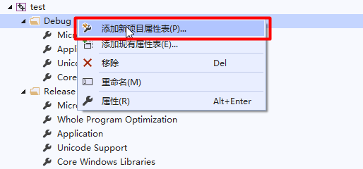

VS2019下配置OpenCV开发环境
安装VS2019
下载地址：https://visualstudio.microsoft.com/zh-hans/vs/
建议下载Community版本
然后安装，安装过程略。
安装OpenCV
下载OpenCV
下载地址：https://www.opencv.org/releases.html 或者 https://github.com/opencv/opencv/releases
根据操作系统下载相应版本就行了，我这里是Windows10，所以下载的是opencv-4.3.0-vc14_vc15.exe
下载完成后，双击解压，我这里放在了D盘下的D:\Program Files\opencv，包含了如下内容：
设置环境变量
VS2019的配置
新建一个项目
改为x64程序
由于OpenCV先在不支持32位系统，所以需要将其改为x64程序
最好将x86删掉，步骤如下：
添加属性表
在属性管理器中添加新的属性表

属性表命名按照OpenCV4.3_DEBUG.props方式命名，这是DEBUG模式下的命名，还有RELEASE模式下的命名，就为OpenCV4.3_RELEASE.props，文件的保存的路径我放在了OpenCV的根目录下了，也就是D:\Program Files\opencv，因为这个文件后续还会用到，所以没有放在项目目录下。
添加完成后就是这样
配置属性表
双击打开OpenCV4.3_DEBUG，进入VC++目录，设置包含目录和库目录
设置包含目录
首先设置包含目录，在里面新添加两个目录，分别是OpenCV根目录下的build\include\opencv2和build\include，这两个目录是用来在编程序时方便使用#include <opencv.hpp>
设置库目录
在库目录中，添加OpenCV根目录下的build\x64\vc15\lib
设置链接器
在链接器下的输入中，设置附加依赖项
首先进入OpenCV跟目录下的build\x64\vc15\lib,会看到两个.lib文件，分别为opencv_world430d.lib和opencv_world430.lib，其中带有d结尾的文件是在Debug模式下用的
将opencv_world430d.lib添加到附加依赖项中
上面针对的是Debug的属性表，对于Release的属性表，这里要填写不带d的那个文件名opencv_world430.lib
至此，属性表设置完成了
测试
随便找一张图片放在项目目录下，我这里使用的一张经典图片lena.png
在VS2019中添加如下代码：
1 |
|
按F5，可以看到图片显示出来了，说明开发环境已经搭建成功了
导出模板
导出模板
如果每次使用都需要搭建一遍那就太麻烦了，不如将其做成模板，方便后续使用
导出过程如下：
这样模板就导出完毕了。
试验模板
新建项目时，选择所有语言，就可以看见刚才导出的OpenCV模板了，直接创建项目就可以了!
完🙂